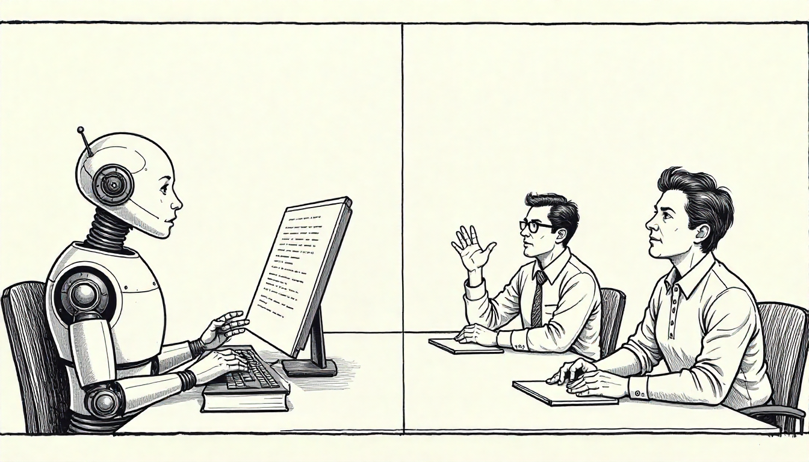
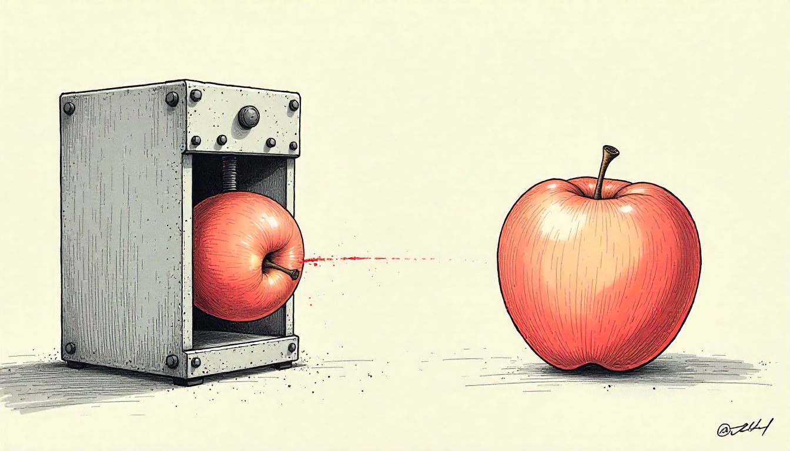
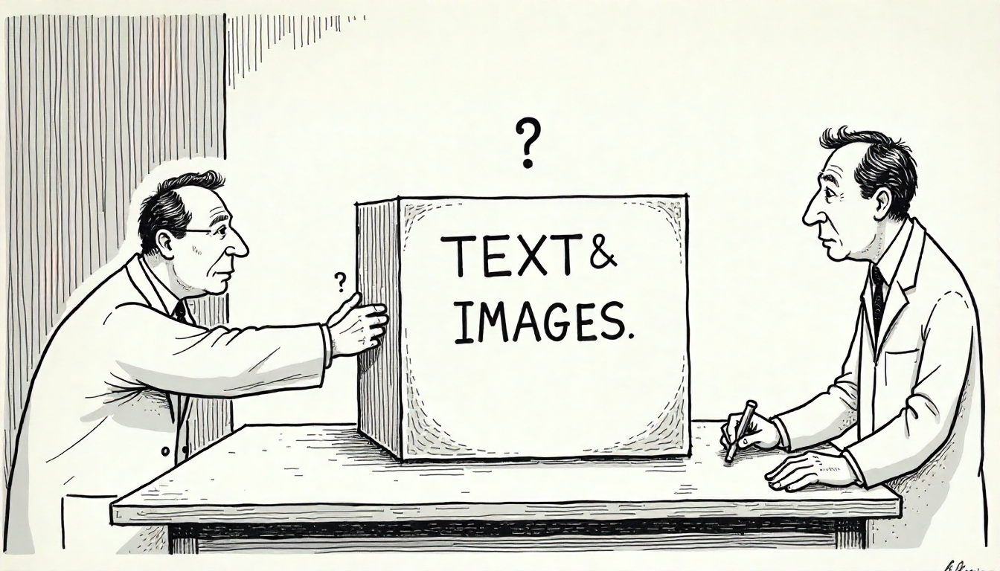
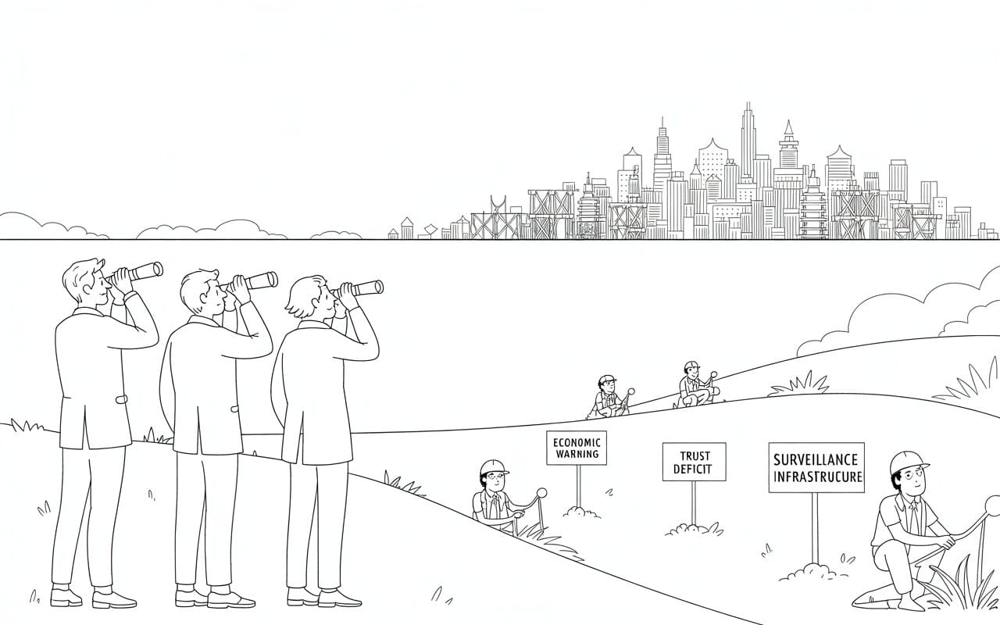
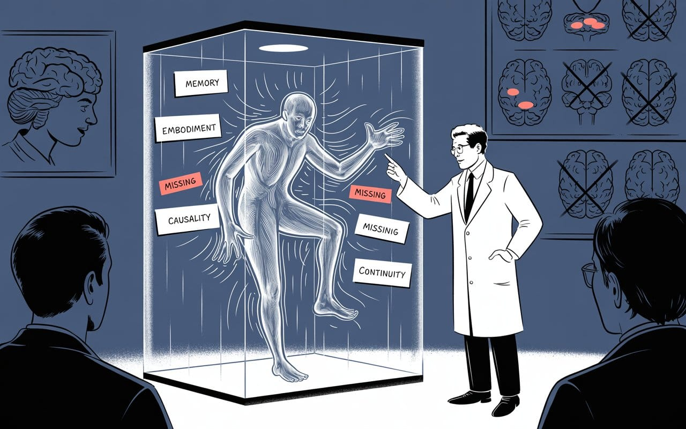
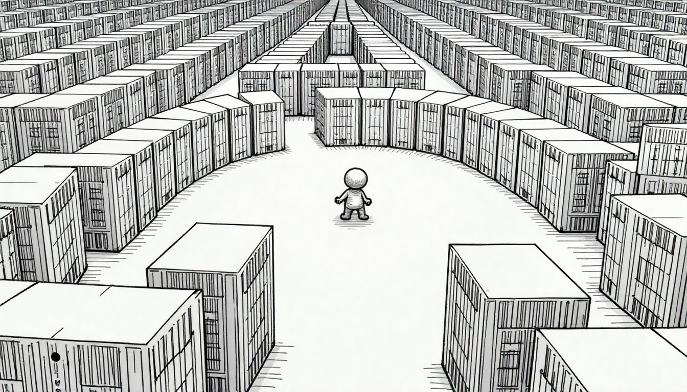
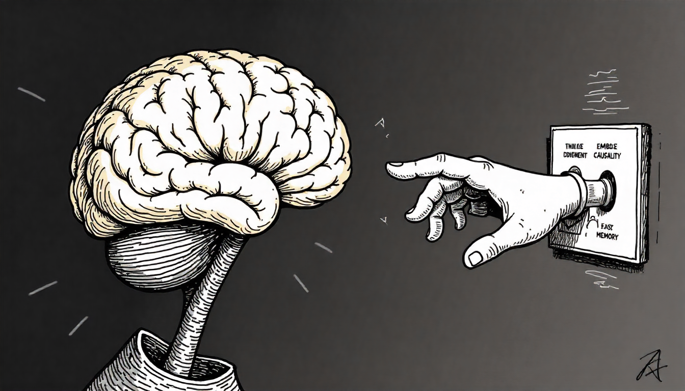

The 10% Delusion
Silicon Valley built a trillion-dollar industry on a paper called "Attention Is All You Need." Problem: we misread it. We kept the math, ditched the meaning, and declared victory over intelligence itself. Now even AI's top researchers admit we're building "ghosts," not minds.


"The first principle is that you must not fool yourself – and you are the easiest person to fool."
— according to a physicist who knew something about self-deception, Richard Feynman, 1974 Caltech commencement address


The Foundational Delusion
The AI industry's favorite paper might be its biggest blind spot
The Attention That Broke the World
It began with hubris. In 2017, eight Google researchers published a paper with a title so confident it became scripture: "Attention Is All You Need." The paper introduced transformers—an elegant architecture for processing sequences. Within five years, this single paper spawned a trillion-dollar industry, reshaped global technology strategy, and set humanity on a collision course with its own overconfidence.
But here's the thing nobody wants to say out loud: we misread it.
Not the math. Not the architecture. We misread what it meant.
Somewhere between publication and implementation, the tech industry performed a catastrophic sleight of hand. We took a paper about mechanism—a way to process sequences—and transformed it into a philosophy about sufficiency. We declared that attention, this one elegant algorithm, was all we needed to build artificial general intelligence.
It wasn't. It isn't. And the consequences of this misreading are civilization-scale.
This misreading hasn't just affected technical architecture—it's fundamentally distorted our understanding of what intelligence requires.
Welcome to the 10% Economy

10%Silicon Valley is building trillion-dollar AI on just 10% of human experienceSilicon Valley is building trillion-dollar AI on just 10% of human experience.
When you train machines exclusively on text, you're getting only a thin slice of reality—the verbal transcription of human thought. But that misses so much of what intelligence actually is. The way someone’s face changes when they’re lying. How your voice drops when you’re uncertain. The thousand small emotional undertones that transform identical words into completely different meanings.
What we call "AI" is actually "TI" (Textual Intelligence). These systems are working with maps instead of territories, reading menus instead of tasting food.
It's like claiming you understand Manhattan because you memorized street signs. You'd never know about rush hour chaos, what it feels like when your backpack gets heavy after walking twenty blocks, or how that blister starts forming on your heel. We'd laugh at someone making that claim.
Yet this is precisely what we've done with AI—built systems that skim the surface of human knowledge while remaining completely disconnected from the messy reality underneath.
Aaron Swartz got hit with federal charges for downloading academic papers. Today, companies scrape the entire internet without consequence, extracting the surface 10% while discarding the embodied 90%. What was once criminal is now just another Tuesday with standard corporate practices—and on bended knee, we're handing over the keys to the kingdom.
AIArtificial IntelligenceIn the Lexicon →The result? Nothing more than really sophisticated autocomplete trained on accessible transcripts.
It's like having the shadow of intelligence instead of the real thing. And just like that hypothetical Manhattan expert, these systems keep running face-first into reality's complexity.
The 2D Reductionism Trap
Here's what we lose when we feed reality into AI systems.

Computer vision takes the living world and performs surgery on it:
- Flattens everything—three dimensions become flat pixels
- Freezes motion—continuous movement becomes static frames
- Removes the mess—blur, shadows, reflections all get cleaned up
- Forces categories—the infinite variety of nature gets sorted into human boxes
Natural language processing does something similar to human conversation:
- Strips away the human—conversation becomes text, losing 90% of its meaning
- Breaks up thoughts—flowing ideas become individual tokens
- Erases context—who's speaking, where, why, under what circumstances
- Standardizes everything—the beautiful messiness of how people actually talk gets normalized
Given these radical simplifications, we shouldn't be surprised when systems trained on this processed reality can't:
- Understand why a tower of blocks topples over
- Handle a simple conversation with an emotional teenager
- Maintain coherent context beyond their immediate window
- Comprehend what it means to feel weight, maintain balance, or experience pain
The explanation isn't mysterious: these systems have never touched a physical object, never experienced real-world consequences, never existed as embodied beings navigating actual space and time.
ConsciousnessSubjective experience of awarenessIn the Lexicon →We've trained ghosts to recognize shadows, then asked them to step into sunlight.
This ghostly metaphor isn't just poetic—it's technically precise. As we'll see, even the field's pioneers now acknowledge we're building "ethereal spirit entities," not embodied intelligences.
The Academic-Industrial Complex
How Academic Credibility Becomes Market Mania
Every tech bubble needs its prophets, and AI found a compelling one in Fei-Fei Li. Her work on ImageNet began as legitimate research before mutating into something far more consequential. This transformation illustrates “The Fei-Fei Parable."
Li identified a real problem: computer vision needed better training data. ImageNet was her solution—legitimate, careful science. When AlexNet conquered the dataset in 2012, it represented genuine progress in image classification.
The original claim was modest and defensible: better datasets improve performance on specific tasks.
But then came the shift. The narrative expanded into something far bolder:
“Visual intelligence is the foundation of all intelligence.”
This was speculation, not science. But it came wrapped in academic credentials and backed by impressive results. Silicon Valley loved it because it justified what they wanted to do anyway:
- Surveillance at planetary scale —rebranded as data collection
- Billions in GPU investments —NVIDIA's stratospheric stock price thanks you
- Endless computer vision startups —each promising to unlock the next breakthrough
$100 MNow it's 2024, and Li has raised $100 million for World Labs with an even grander claim: spatial intelligence will unlock AGINow it's 2024, and Li has raised $100 million for World Labs with an even grander claim: spatial intelligence will unlock AGI.
The promises have ballooned and the price tags have exploded, yet the fundamental problem remains precisely the same.
ImageNet suggested that 2D visual data could solve recognition problems. World Labs argues that 3D spatial data will solve intelligence itself.
Both catastrophically mistake the map for the territory.
I've spent my career building spatial computing systems—capturing reality in three dimensions, designing volumetric models, working with light and space in ways most people never see. So I know exactly what spatial data can and can't capture.
What it misses:
- The way weight shifts in your hands as you lift a child
- The instant you know a glass will shatter before it hits the floor
- The physics written in your muscles when you catch yourself from falling
- The way wood splinters differently than plastic breaks
- The thousand micro-adjustments your body makes to stay upright
You could scan every staircase on Earth in perfect detail, yet your AI will never truly understand falling until it has knees that can bleed.
That $100 million isn't going toward building knees. It's funding sensors everywhere, cameras watching everything, LiDAR scanning everyone, teams of people labeling human movements.
ImageNet wanted to catalog the visual world. World Labs wants to map the inside of your house.
The AGI promise isn't just investor bait—it's the ultimate market, the existential FOMO that transforms rational venture capitalists into zealous true believers.
Li isn't the villain in this story. She's a brilliant researcher caught in a system that rewards grand promises over careful progress. But the damage is real: billions of dollars and thousands of smart people now chase the wrong problems while potentially transformative research gets ignored.
This pattern—where legitimate academic work transforms into overblown market promises—repeats throughout AI's recent history, with each cycle further distorting our understanding of what genuine progress looks like.
The Null Hypothesis We Should Have Tested

Here's the most dangerous mistake in modern AI research—we've completely inverted the null hypothesis.
Real scientific rigor would have started with the conservative assumption:
"Text and image patterns are probably insufficient for general intelligence."
Then we'd need overwhelming evidence to prove otherwise—genuine understanding, causal reasoning, real adaptation to novel situations.
Instead, we assumed sufficiency from day one. We designed benchmarks that deliberately confirmed what we wanted to believe. And when these systems inevitably failed in the real world—producing hallucinations, revealing brittleness, exposing obvious gaps—we didn't question our fundamental assumptions. We merely blamed the implementation.
"Add more parameters!" became the industry mantra. "More data!" "Bigger GPUs!" "Scale solves everything!"
This isn't science anymore.
We've transformed the scientific method into technological theology—modern-day scholastics contorting evidence to support predetermined dogma rather than following where the evidence leads.
The modern inquisition doesn't burn heretics. It just defunds them. Researchers who question the transformer paradigm find themselves marginalized while billions flow to those promising salvation through scale.
This methodological failure undermines the entire enterprise. We're not just building the wrong systems—we're asking the wrong questions from the start.
The Citations That Matter
To ground these assertions in concrete evidence, here's the crucial paper trail:
- "Attention Is All You Need" - Vaswani et al., 2017, Google Research
- ImageNet Large Scale Visual Recognition Challenge - Russakovsky et al., 2015
- Deep Reinforcement Learning from Human Preferences - Christiano et al., 2017, OpenAI
- World Labs - Founded 2024, $100M seed round
And most critically, the interview that crystallizes these concerns:
- Dwarkesh Patel Podcast with Andrej Karpathy - October 2025—where one of AI's most respected researchers admits we're building "ghosts," not intelligence
These aren't obscure or fringe sources—they represent the field's foundational texts and most respected voices. When examined carefully, they reveal a profound chasm between industry claims and technological reality that can no longer be ignored by investors, researchers, or society at large.
What Intelligence Actually Requires
The Cathedral Built on Sand
I've spent decades capturing reality in ways people said were impossible. The first 360° live-streaming system when everyone insisted it couldn't work. Street View's foundational architecture when Google needed to digitize the world. Emmy-winning immersive experiences that transported millions into other realities.
This experience places me at a critical intersection—between Silicon Valley's grand promises and what technology can actually deliver. What I see today isn't just concerning—it's alarming.
After all these years, I know intimately what we can capture of reality. More importantly, I know what we lose in the process.
So when the AI industry claims they're building artificial general intelligence from text and flat images, I don't see breakthrough technology. Instead, I see a trillion-dollar mistake—breathtaking from a distance but constructed on catastrophically unstable foundations.
Current AI systems remind me of orchids. Stunning in the right environment, but incredibly fragile. They need:
- Sanitized data—cleaned, filtered, labeled by humans who remove anything messy or contradictory
- Artificial taxonomies—reality pre-sorted into categories that don't actually exist in nature
- Perfect examples—step outside their training data and they fall apart
- Constant pruning—teams of humans constantly tweaking outputs, like gardeners trimming wayward branches
In contrast, actual intelligence works more like a weed—pushing through concrete, thriving in chaos, learning from pain, failure, and contradiction.
A two-year-old learns physics by dropping plates. Social dynamics by misreading facial expressions. Language by babbling until sounds become words. They learn from a world that's noisy, contradictory, and often harsh.
Meanwhile, our AI systems train in climate-controlled server farms on sanitized Wikipedia articles and carefully labeled Instagram photos.
The disconnect isn’t just obvious, it’s devastating.
What Intelligence Needs
After decades building systems that capture and process reality, I've developed insights about what intelligence actually requires—not what Silicon Valley wishes it needed for convenience, but what genuine intelligence fundamentally demands:
- The Physics of Pain and Joy
Intelligence emerges through physical consequence. It requires bodies that feel pain, muscles that remember strain, systems that learn from genuine failure. Not artificial reward signals or token predictions in digital space—but real stakes in a physical world with actual consequences. - Time's Arrow
Intelligence experiences time's irreversible flow, building itself moment by moment. Memory isn't a data warehouse—it's a dynamic prediction system continuously refined through lived experience. - The Wisdom of Chaos
Tech companies treat noise as a problem to eliminate. Yet the flutter of leaves, subtle facial microexpressions, contradictions between words and tone—these aren't noise but signal. They constitute the essential foundation of understanding. Sanitize the input too thoroughly and you eliminate the very complexity from which intelligence emerges. - The Symphony of Senses
AI labs build isolated systems that see OR hear OR process text, then awkwardly stitch them together afterward. In contrast, real intelligence emerges from integrated senses that constantly inform and calibrate each other—vision guiding touch, touch teaching balance, balance enabling purposeful movement. - The Why Behind What
Current models can witness a million sunrises and flawlessly predict tomorrow's dawn. Yet they fundamentally don't understand WHY the sun rises—they've never experienced Earth's rotation or gravity's pull, never developed the causal understanding that bridges mere observation to genuine explanation.
Meanwhile, our research priorities remain:
- Bigger transformers (as if sheer size could birth genuine wisdom)
- More data (as if raw quantity could ever replace meaningful quality)
- More modalities (as if crudely bolting deaf ears onto blind eyes could create true hearing)
We're not merely solving the wrong problem—we're systematically scaling up our fundamental mistakes at an accelerating pace.
Every week brings a flood of new papers, architectures, and benchmarks. None address these foundational gaps. Most don't even recognize them as problems. Instead, we keep constructing increasingly elaborate versions of the same fundamental error.
The result? Systems that can recite Wikipedia but can't understand why a child is crying.
This isn't merely a technical failure—it's a conceptual one. We've confused information processing with understanding, pattern recognition with intelligence.
The Ghost Confession
“We're Building Ghosts, Not Animals”
Just as I was completing this analysis, I encountered an interview that demands our immediate attention. Andrej Karpathy—former director of AI at Tesla, founding member of OpenAI, and one of the field's most respected researchers—sat down with Dwarkesh Patel in October 2025 and made an admission that crystallizes everything I've been arguing:
"We're not actually building animals. We're building ghosts."
Let me repeat that: We're building ghosts.
The full interview is available on YouTube and the transcript is published on Patel's Substack. I recommend diving into both. What makes this confession so powerful is that it comes from someone who helped build these systems—and who still believes they can be useful.
The Pragmatic Confession
What makes Karpathy's position particularly devastating is that it's not outright condemnation but rather pragmatic acceptance of fundamental limitations. He's not claiming current AI is worthless—instead, he's acknowledging we've built something categorically different from intelligence, and we need to stop pretending otherwise.
Here are his exact words:
"We're not doing training by evolution. We're doing training by basically imitation of humans and the data that they've put on the internet. And so you end up with these ethereal spirit entities because they're fully digital, and they're kind of mimicking humans. And it's a different kind of intelligence."
The crucial insight in his admission is that he acknowledges we can't build actual intelligence through our current methods. His key statement: "I'm very hesitant to take inspiration from [animals] because we're not actually running that process."
We can't run evolution. We can't build animals. So we built ghosts instead—"ethereal spirit entities" that mimic intelligence without understanding it.
The Knowledge Trap He Identifies
Karpathy goes further, identifying precisely the problem I've been describing throughout this essay—what he calls getting AI systems to "rely on the knowledge a little too much":
"I actually think we need to figure out ways to remove some of the knowledge and to keep what I call this cognitive core... this intelligent entity that is kind of stripped from knowledge but contains the algorithms and contains the magic of intelligence and problem solving."
In other words: Current systems are merely sophisticated databases masquerading as minds. They're so fundamentally dependent on having seen similar patterns that they cannot reason about genuinely novel situations.
The Architectural Gaps That Can't Be Scaled Away
Karpathy's technical analysis reveals why simply making models bigger won't solve the fundamental problems:
No persistent memory: "When you look at them up and they have zero tokens in the window, they're always restarting from scratch where they were."
Missing emotional grounding: Unlike animal brains that have amygdala for value assignment, these systems lack genuine preference structures.
No causal understanding: They pattern-match rather than understanding why events occur.
His sobering conclusion? "You're not going to hire this thing as an intern. It comes with a lot of cognitive deficits... it's just not fully there yet."
The Decade Timeline He Can't Justify
When Patel asks why agents will take a decade to work properly, Karpathy's answer is essentially:
"Intuition based on watching smart people fail at this for 15 years."
He lists what's fundamentally missing:
Continual Learning: These systems reset every session. They can't learn from ongoing experience.
Long-term Memory: There's no equivalent to human sleep—no consolidation process that distills experience into persistent knowledge.
Embodied Consequence: They've never touched anything, never experienced cause and effect in physical reality.
Causal Reasoning: They pattern-match. They don't understand why things happen.
Then he says something that should be quoted in every AI product prospectus:
"When you look at them up and they have zero tokens in the window, they're always restarting from scratch where they were."
These systems have no continuity of self. No persistent identity. No learning that survives beyond a conversation session.
They're not agents. They're not even close. They're sophisticated autocomplete engines that reset to factory settings every time you close the tab.
Consequences on the Horizon

The Trillion-Dollar Correction
My thoughts aren't filled with science fiction scenarios of AI domination. Rather, it's the looming economic devastation that will occur when reality finally collides with our grossly inflated promises.
We've built a trillion-dollar industry on assumptions that may be fundamentally wrong. Every major tech company is betting that stacking enough pattern-matching layers will eventually produce consciousness. Investment decisions flow based on benchmarks designed to confirm our biases.
Reality is already showing the cracks:
- Our systems shatter the moment they leave the lab
- They need human supervision constantly
- Step outside their training data and they break down
- AI safety has become an exercise in damage control
Yet confronting this uncomfortable reality carries an unbearable cost for those heavily invested in the current paradigm:
- Researchers whose entire careers now depend on incremental transformer improvements
- Tech giants whose trillion-dollar valuations assume AGI delivery by 2029
- Venture capitalists with billions staked on the promised arrival of digital consciousness
- Media companies whose traffic and revenue depend on perpetuating AI hype
The entire industry is trapped in a self-reinforcing cycle where acknowledging fundamental flaws risks collapsing an elaborate ecosystem built on collective wishful thinking.
This isn't just a market bubble. It's a reality distortion field that's captured entire industries. The correction, when it comes, won't just affect tech stocks. It will reshape how we think about intelligence, automation, and human capability.
And like all major corrections, the warning signs are visible long before the crash—to those willing to see them.
The Civilization-Scale Risk
The consequences extend far beyond tech company valuations. Here's how this plays out:
Stage 1: The Great Misallocation
While billions flow toward transformer scaling, truly transformative approaches starve for resources. Embodied learning, causal reasoning systems, architectures designed for messy reality—approaches that might genuinely advance intelligence—struggle for basic funding and attention.
Stage 2: The Surveillance Trap
Under the seemingly innocuous banner of "AI training data," we're constructing history's most extensive surveillance infrastructure—ubiquitous sensors in cities, pervasive data collection in homes, systems monitoring human behavior at unprecedented scale. When the AI promises inevitably collapse, this infrastructure will remain—primed and waiting for whoever seeks to exploit it.
Stage 3: The Trust Apocalypse
Each high-profile AI failure systematically erodes public trust in technology. When autonomous systems eventually fail catastrophically—as they inevitably will—people won't merely reject those specific products. They'll develop profound skepticism toward technological solutions across all domains, setting back genuine progress for decades.
Stage 4: The New Cold War
Governments increasingly view AI as the ultimate national security imperative, recklessly racing to build systems they fundamentally don't understand. This misguided competition accelerates:
- Dangerously rushed AI development with minimal safety protocols
- Aggressive digital colonialism as nations compete for data and computational resources
- Critical military systems built atop fundamentally unreliable technology
- Intensifying global resource conflicts over semiconductors, rare minerals, and energy
Stage 5: The Hollow Economy
We're not truly automating meaningful work, we’re creating an unprecedented digital bureaucracy. Every AI system requires human trainers, supervisors, and creates vast armies of AI babysitters performing hollow, unfulfilling work.
The real risk isn't killer robots. It's economic disruption when reality doesn't match the promises—and the people who profit from the hype cash out before the crash. These risks compound each other, creating a cascade of consequences that extends far beyond the AI industry itself.
Having outlined this cascade of civilization-scale risks, we must now examine the precise technical limitations that Karpathy himself acknowledges—limitations that validate these concerns.
The Missing Architecture He Catalogs
In a particularly revealing segment, Karpathy methodically analyzes the brain analogies in current AI systems, cataloging what we've successfully replicated versus what remains conspicuously absent:
What we have:
- Transformers ≈ cortical tissue (general-purpose pattern processing) ✓
- Chain-of-thought reasoning ≈ prefrontal cortex (serial reasoning) ✓
- RLHF ≈ some reinforcement learning mechanisms ✓
What we're missing:
- Hippocampus (memory consolidation—how experiences become knowledge)
- Amygdala (emotions, instincts, value assignment)
- Dozens of other brain nuclei we don't even understand yet
His conclusion?
"You're not going to hire this thing as an intern. It comes with a lot of cognitive deficits... it's just not fully there yet."
Not in five years. Not in ten years. Not with current architectures.
Because these fundamental brain components aren't simply missing—they're not even on the roadmap. The cognitive toolkit remains woefully incomplete, no amount of scaling transformers will magically grow a hippocampus (or an amygdala).
Why This Validates Our Thesis

The Expert Confirmation
Karpathy is describing the mechanism of what I've been calling the 10% delusion:
- We train on disembodied text (building ghosts, not animals)
- We confuse knowledge accumulation for intelligence (memorization ≠ reasoning)
- We lack architectural components for actual agency (no memory consolidation, no emotional grounding, no persistent identity)
- We're solving the wrong problem (imitating human text output rather than building embodied cognition)
What makes this assessment particularly devastating is that it comes from inside the system. Karpathy helped build OpenAI. He led AI at Tesla. He knows intimately what these systems can and cannot do.
And he's telling you: It's going to take a decade to fix these fundamental gaps. Minimum.
That's not pessimism. That's optimism assuming we even know how to solve these problems.
The Research Gaps He Won't Address
Digging deeper into Karpathy's analysis, he admits several fundamental capabilities we have no idea how to implement:
- Give models persistent memory that distills experience into weights
- Create emotional grounding for decision-making beyond reward signals
- Enable genuine novelty-seeking (agents stay "on the data manifold" of their training)
- Build causal models from interaction rather than correlation from text
- Create continual learning without catastrophic forgetting
These aren't mere engineering hurdles to overcome. These are fundamental architectural problems without known solutions or even promising approaches on the horizon.
And here's what should terrify investors: The labs are selling AGI timelines of 2-5 years while their own senior researchers are saying "maybe a decade for basic agent capability, if we're lucky and the problems are tractable."
That word—tractable—carries enormous weight. Karpathy isn’t merely suggesting a longer timeline, he’s questioning whether these problems can be solved with current paradigms at all.
The Ghost in the Machine
How Silicon Valley Built Ethereal Mimics Instead of Minds
Karpathy's framing—"we're building ghosts"—perfectly captures the fundamental nature of the mistake:
Ghosts are disembodied. They have no physical presence, no embodied consequence.
Ghosts mimic life without living it. They perform behaviors without understanding why.
Ghosts haunt spaces without inhabiting them. They occupy environments without affecting or being affected by them.
Ghosts have no continuity. They're ephemeral, resetting, unable to learn persistently.
This metaphor brilliantly encapsulates what we've actually built: sophisticated mimicry with impressive performance but zero understanding—entities with no persistent learning, no causal reasoning, no embodied intelligence.
Yet despite these fundamental limitations, we're asking these ghosts to function as employees—to reason causally, learn continually, navigate embodied reality, make long-term decisions, and understand consequences.
You can't ask a ghost to build a house. It has no hands.
You can't ask a ghost to learn from experience. It has no memory consolidation.
You can't ask a ghost to reason causally. It has never experienced consequence.
The Practical Implications
When Karpathy says "decade of agents" (not "year of agents" as some labs claimed), he's not being pessimistic. He's being realistic based on 15 years of watching cutting-edge researchers struggle with these problems.
His timeline is informed by witnessing firsthand:
- The deep learning revolution (2012)
- The reinforcement learning hype cycle (2013-2018)
- The large language model emergence (2018-2024)
Throughout each phase, the industry has repeatedly declared AGI "just around the corner" once we solved whatever seemed to be the current bottleneck.
Yet each solved bottleneck only reveals deeper, more fundamental challenges. These problems run far deeper than the industry wants to admit, and the optimistic timelines remain pure fantasy.
The Conclusion This Demands
Now we have confirmation from multiple angles:
From my perspective (embodied technology, spatial computing, systems intelligence): Current AI strips away 90% of reality and trains on the remainder.
From Karpathy's perspective (deep inside AI research, 15 years of experience, founding member of OpenAI): Current AI builds "ghosts"—disembodied mimics lacking the architectural components for genuine agency.
The synthesis of these perspectives reveals a stark truth: We've built a trillion-dollar industry on sophisticated text completion and labeled it "intelligence." The fundamental gaps aren't being addressed not because of lack of effort, but because we don't yet know how to address them. The ambitious timelines flooding the market are fantasy driven by investor FOMO, and the correction, when it eventually arrives, will be severe and far-reaching.
Is There A Clear Path?
Karpathy ends his discussion with something that should haunt the industry:
"I'm very hesitant to take inspiration from [animal cognition] because we're not actually running that process."
He's right. We're not running evolution. We can't. We don't have billions of years or planetary-scale selection pressure.
But here's my question, and it's one Karpathy doesn't answer:
If we're not running evolution, and pre-training on text isn't sufficient, and we're missing most of the brain architectures required for agency, and we don't know how to build memory consolidation or causal reasoning or continual learning... what exactly is the path to AGI?
Karpathy doesn't have an answer. He has a decade-long research agenda and hope that the problems are "tractable."
I have a different prediction based on the evidence: These problems are not tractable within current paradigms. We need fundamental rethinking, not incremental improvement.
Until that great rethinking happens, we're just building increasingly expensive ghosts - digital Caspers burning through venture capital faster than they can say 'boo' to reality.
This admission doesn't just validate the critique—it transforms it from outside perspective to inside knowledge.
The Path Forward
What Must Change
Addressing these fundamental issues demands more than technical fixes—it requires institutional transformation at multiple levels. The necessary changes aren't mysterious, but they do require something both simple and profoundly difficult: institutional honesty.
- Break the Academic-Venture Ouroboros
When professors simultaneously serve as venture capitalists, rigorous science inevitably suffers. Academic research must remain separate from billion-dollar funding rounds. Research requires clear boundaries, rigorous peer review, and healthy skepticism, while business demands honest risk disclosure and tangible products. - Make AI Claims as Regulated as Drug Claims
Pharmaceutical companies face severe penalties for making unsubstantiated claims about their products. Meanwhile, tech companies routinely promise human-level intelligence without consequences. It's time we hold AI claims to the same regulatory standards we demand from healthcare. - Rewrite the Funding Equation
Billions cascade toward transformer scaling while truly innovative approaches—embodied AI, causal reasoning systems, architectures designed for messy reality—fight for basic resources. We must fundamentally rebalance funding priorities toward scientific merit rather than perpetuating investor hype cycles. - Demand Warning Labels
AI systems require mandatory warnings: "Fails unpredictably in novel situations. Requires constant human oversight. Cannot understand cause and effect." Just as we demand from pharmaceuticals and other consequential products, AI deployments must clearly disclose their fundamental limitations. - Burn the False Idols
Current benchmarks merely measure performance under artificially perfect conditions. We need fundamentally different evaluation methods—ones that assess resilience to chaos, adaptation to genuine novelty, causal understanding, and persistent memory—the capabilities that genuinely define intelligence.
These changes aren't anti-innovation—they're pro-integrity, ensuring that progress in AI remains both scientifically sound and socially beneficial.
Despite these critiques, there is a constructive way forward—one that acknowledges both the potential and limitations of our current approach.
The Path Through
I don't hate AI. I hate the delusions we've built around it.

Large language models are genuinely impressive tools. They excel at pattern completion, text summarization, and information retrieval—achievements worthy of genuine appreciation.
But impressive performance doesn't equal consciousness. We're building extraordinarily sophisticated mirrors and mistaking our reflections for independent minds.
We've become modern alchemists, tossing ingredients into digital cauldrons while chanting incantations of scale, desperately expecting consciousness to materialize from our algorithms. We urgently need more voices willing to ask the uncomfortable question: "What if we're not merely implementing incorrectly, but pursuing a fundamentally misguided approach?"
That's why I'm writing this. Not just to criticize, but to challenge the entire AI community:
Show me an AI that can feel rain on its skin and learn from the sensation.
Show me one that thrives rather than shatters when reality delivers the unexpected.
Show me one that grasps why events occur, not merely what statistical pattern might follow.
Show me one that carries yesterday's experiences into today's decisions with the continuity that defines consciousness.
You can't—because current architectures fundamentally cannot do this. Current training approaches cannot achieve this. And simply scaling up existing methods won't bridge this chasm.
Until these fundamental capabilities exist, claims about approaching AGI are dangerously misleading. We're constructing increasingly expensive systems that disintegrate upon contact with real-world complexity.
The issue isn't about AI's potential value—it's about intellectual honesty regarding what we're actually building and where its capabilities fundamentally end.
Returning to where we began, we must reconsider what that 2017 paper actually gave us—and what it didn't.
Attention Isn't All You Need

The Mechanism We Turned Into Mythology
That research paper title was elegant and seductive. The attention mechanism itself was brilliant. But what we've done with it has become the most expensive mistake in tech history.
Attention is merely a clever mechanism for processing sequences—nothing more. It's not consciousness, understanding, or thought. It's simply sophisticated pattern matching wrapped in elegant mathematics.
We've constructed billion-dollar puppets and desperately convinced ourselves they're alive. Along the way, we've systematically confused memorization with understanding, correlation with causation, and superficial mimicry with genuine minds.
And we've bet everything on this confusion.
Our datasets capture reality like studying oceans by collecting only foam from the surface. Our sanitized training data resembles studying biology through taxidermied specimens. Our benchmarks measure only how perfectly mirrors reflect—never whether they comprehend what they're reflecting.
Time for honesty: we've built extraordinarily sophisticated autocomplete engines masquerading as artificial intelligence.
We have two choices:
- Confront these fundamental limitations now and radically adjust our course
- Wait for reality to systematically dismantle our assumptions through increasingly catastrophic and expensive failures
We can still choose. But not for much longer. The cracks are already showing.
The time for such honesty is rapidly approaching, whether the industry is ready or not.
The Questions That Remain
- How many billions more will we sacrifice before acknowledging we're pursuing a fundamentally flawed approach?
- How many more billion-dollar startups will spectacularly fail to deliver on their grandiose AGI promises?
- How many brilliant careers will be wasted pursuing a paradigm that fundamentally cannot succeed?
- How many precious years of innovation will we squander scaling approaches that can never bridge the chasm to true intelligence?
Karpathy thinks it's a decade. I think it's longer, because I think we haven't even started asking the right questions yet.
But here's what I know for certain:
- The ghosts we're building won't become real by making them larger, faster, or more expensive.
They'll remain ghosts—impressive, useful in narrow domains, but fundamentally incapable of the embodied, causal, continual intelligence we need them to have.
The attention economy fundamentally broke our ability to perceive reality clearly. Now we're building an entire AI economy atop that fundamentally distorted foundation.
Attention isn't all you need. It never was. And the sooner we collectively acknowledge this fundamental truth, the sooner we can begin building systems that might genuinely approach the intelligence we seek.
This isn't merely a technical correction—it's an essential recalibration of an industry that has lost its grounding in both scientific humility and technological realism.
Sources & Further Exploration
Primary Sources:
- Vaswani, A., et al. (2017). "Attention Is All You Need." Advances in Neural Information Processing Systems, 30.
- Patel, D. (2025). "Andrej Karpathy on AGI, Agents, and the Future of AI." Dwarkesh Podcast. Full interview | Transcript
- Russakovsky, O., et al. (2015). "ImageNet Large Scale Visual Recognition Challenge." International Journal of Computer Vision, 115(3), 211-252.
- Christiano, P., et al. (2017). "Deep Reinforcement Learning from Human Preferences." Advances in Neural Information Processing Systems, 30.
For Deeper Exploration:
- Sutton, R. S., & Barto, A. G. (2018). Reinforcement Learning: An Introduction. MIT Press.
- World Labs. (2024). Company founding announcement and spatial intelligence thesis. [Various tech press coverage]
- Wakil, K. (Coming 2026). Knowware: Systems of Intelligence (The Third Pillar of Innovation). [Theoretical framework for systems-level intelligence]
Deep Dive Interviews:
- Watch or download the transcript for the Richard Sutton interview: https://www.dwarkesh.com/p/richard-sutton
My Background (For Context):
As a cybernetic systems theorist specializing in spatial computing and immersive technology, my credentials include:
- Pioneer of world's first 360° live-streaming pipeline
- Contributor to translating Google Street View's technological foundation into ground-breaking and award-winning immersive experiences
- Led teams that earned Cannes Lions, Grand Prix’s, and an Emmy Award for technological innovation
- UN Special Envoy working on global coordination challenges
- Research focus: embodied cognition, spatial intelligence, neuromorphic computation, ternary logic, motion intelligence, and systems-level emergence
I write from the perspective of someone who has spent decades capturing and representing reality through technology—and who understands intimately what gets lost in that capture.
Don't miss the weekly roundup of articles and videos from the week in the form of these Pearls of Wisdom. Click to listen in and learn about tomorrow, today.


Sign up now to read the post and get access to the full library of posts for subscribers only.
 🌶️ iamkhayyam
🌶️ iamkhayyam
About the Author
Khayyam Wakil bridges the gap between what technology promises and what reality delivers. Creator of the world's first 360° live-streaming system and architect behind transforming the technology behind Google Street View's reinvention into an entertainment platform, he's an award-winning innovator (Cannes Lions, Emmy Award, and others in areas of creative and technological innovations in immersive technology.
His forthcoming book, "Knowware: Systems of Intelligence — The Third Pillar of Innovation” challenges Silicon Valley's assumptions about artificial intelligence and proposes a radical new framework for systems of intelligence—one built on embodied cognition rather than pattern matching.
For speaking engagements or media inquiries: sendtoknowware@protonmail.com
Subscribe to "Token Wisdom" for weekly deep dives and round-ups into the future of intelligence, both artificial and natural: https://ghost-production-198e.up.railway.app
What compels me to document this moment isn't just the pattern of boom-bust cycles in tech, but the realization that while brilliant theorists accurately diagnose our limitations, the practical solutions may come from unexpected directions. When you're actually building systems that address these decades-old challenges, you have a responsibility to speak up - even if your perspective challenges the dominant narrative.
The stakes here extend far beyond market dynamics. We're watching the collision between elegant theory, massive capital deployment, and the messy reality of implementation. The question isn't just whether we'll learn financial lessons before or after a crash - it's whether we'll recognize breakthrough solutions when they emerge from outside the expected frameworks.
#spatialcomputing #AIdelusion #systemsofintelligence #embodiedcognition #technologycritique #AI #hype | #tokenwisdom #thelessyouknow 🌈✨